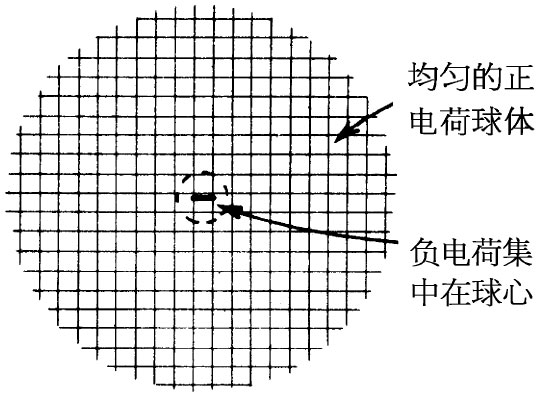
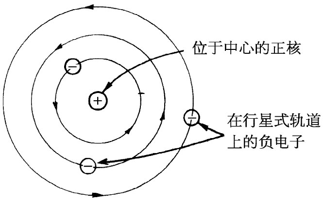

如果电荷不能够稳定地保持在它们的位置上，那么把物质想象成由受静电学定律支配的静止点 电荷（电子和质子）所构成，肯定是不合适的。诸如这样的静止组态不可能存在，它是会坍塌的！
有人曾经建议过，原子的正电荷可以均匀地分布在一个球体中，而负电荷（各电子）则可静止地处于该正电荷之中，如图5-3所示。这是第一个原子模型，由汤姆孙所倡议。但卢瑟福却从盖革和马斯登的实验中得出结论：正电荷是很集中的，集中于他所称之为核的地方。汤姆孙的静止模型就不得不放弃了。于是卢瑟福和玻尔建议平衡可能是动力学的，电子在轨道上环行，就像图5-4所示的那种情况。通过轨道运动，电子将避免跌落到核里去。对于这样一种图像我们已知道至少有一点困难。电子这样运动就会有加速度（由于圆周运动），从而会辐射能量。它们将丧失待在轨道上所需要的动能，从而会螺旋式地趋向核，再度出现不稳定！
|  |  |
| 图5-3 原子的汤姆孙模型 | 图5-4 原子的卢瑟福玻尔模型 |
原子的稳定性现在可由量子力学给予解释。静电力把电子尽可能拉近核，但电子却被迫持续在空间中扩展一定距离，那是由不确定性原理规定的。假如它被禁锢在一个太小的空间里，它便有一个大的动量不确定性。但这意味着它会拥有高的期待能量——将被用来摆脱电的引力的影响，净结果是与汤姆孙想法没有太大差别的电的平衡——只是现在扩展开来的是负 电荷（因为电子质量比质子质量小得多）。